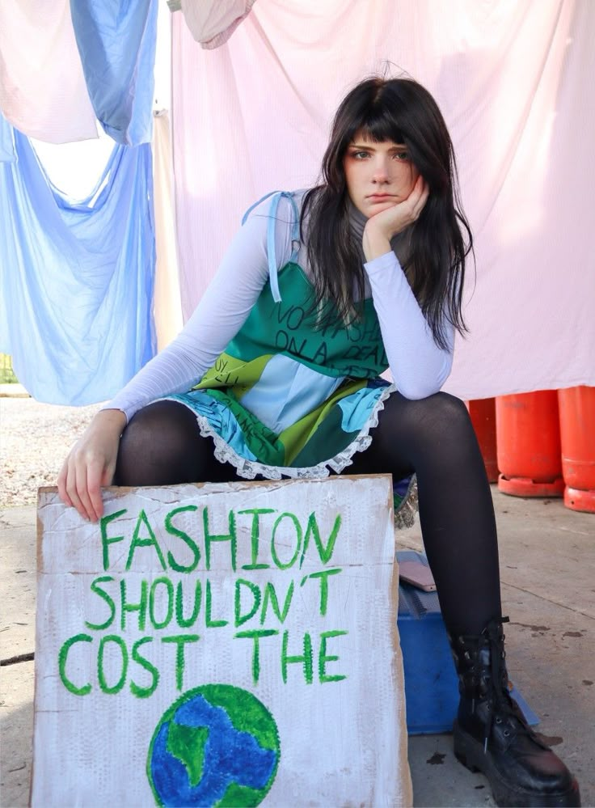
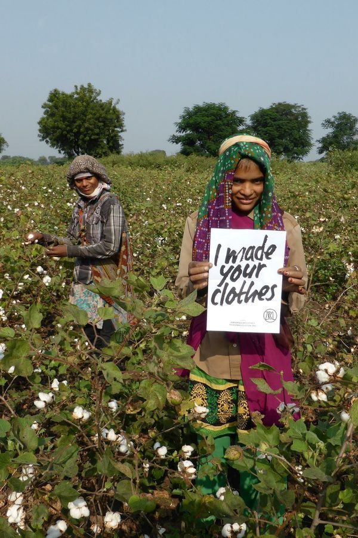

Earn Points from your fashionable actions
Use Commit2Act to track the impact of your actions!
Earn rewards, qualify for prizes and learn from others who are taking action to secure a sustainable fashion future for us all.
Each Action has a calculation to determine how much C02 has been saved.
Upload photos of your action as evidence to demonstrate your fashion focused actions.
Harness the power of AI image recognition to validate your impact.

Commit to Change
We wear clothes for comfort and protection as well as to express ourselves. Much of our clothing is made cheaply, unethically and has a huge impact on our planet. Here are some ways you can take action on this issue:
Repair or mend, buy from second hand thrift stores and donate clothes instead of throwing them away and track your impact with Commit2Act!
Buy less and choose quality over quantity.
Support ethical and sustainable fashion brands with GoodonYOU.